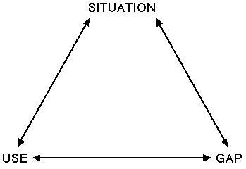
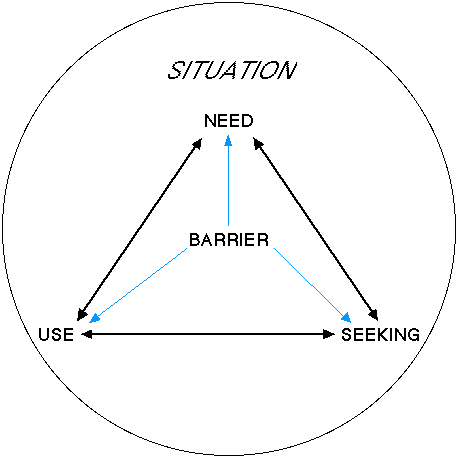

| |
|
|
|
Paranormal information seeking in everyday life:
the paranormal in information action
Jarkko Kari
Department of Information Studies
University of Tampere
csjakar@uta.fi
Introduction
The purpose of this licentiate's study is to examine information action
(needs, seeking and use) in the context of paranormal information
(information about the paranormal or information supposedly acquired by
paranormal means) in a particular situation, as experienced by people who
are interested in the supernatural. The central aspects of the research are
its focus on the individual, situation, meanings and process, which should
amount to a holistic picture of information action. The study is primarily
theory-driven, and its conceptual framework is grounded upon Dervin's
sense-making theory. The basic elements, which are situation, gap (need)
and use, are enhanced by two new elements, construction (seeking) and
barrier. This is done in an effort to develop a theory of information
action that is more concrete and unambiguous than the original sense-making
theory. The main objective of the study at hand, however, is to analyze the
content of information action, rather than its structure. The research is
qualitative and somewhat exploratory by its nature. The data is constituted
by 20 micro-moment time-line interviews which were conducted in Finland in
1995. Right now, the material is being coded for analysis.
Points of departure
During the last
couple of decades, it has been noted that interest in paranormal or
supernatural phenomena has grown substantially in America and Europe
(Heino, 1994). Today interest and belief in paranormal phenomena is
remarkably common (Parsons, 1992; Sparks et al. , 1995) --
perhaps even more common than ever before (see Griffon, 1991). The figures
on the share of believers in the paranormal vary, but on the basis of
several surveys, it can be said that well over half of population believes
in the existence of paranormal phenomena (Blackmore, 1990). Paranormal
beliefs are universal, which suggests that they are very important to the
human being (Schumaker, 1987). It would strike one as natural then that
supernatural experiences and interest in these would tend to arouse in
people a need to know more about these phenomena.
I call
information relating to paranormal phenomena paranormal
information . Little is known about how this information is
manifested in information action, that is, in information needs, seeking
and use. Nevertheless the title of a leader by Tapani Kuningas2 -- "Need
for information is growing" (Kuningas, 1995) -- tells us something. From
the viewpoint of scientific research, paranormal information is like a
black box: the scientific community is aware of it, but scholars either
belittle it or they lack the courage to take a look what is inside. This is
why hardly anything at all is known about the relationship between
paranormal phenomena and information action, or, to put it differently,
between paranormal information and everyday life. As far as I know, my
master's thesis, Paranormal information seeking in everyday life --
part I (Kari, 1996), was the first and apparently still the only
scientific study in the world that examines paranormal information in
information action. That study merely succeeded in scratching the surface
of the phenomena in question, so that there is an obvious need for further
research.
My licentiate thesis in preparation is a continuation
of my master's thesis. These two studies are meant to complement each
other. Being a survey, the purpose of my master's thesis was to map the
general features of needs and seeking of paranormal information. On the
other hand, with the help of my licentiate thesis, which is based on
interview material, I hope to "penetrate the surface" and to discover ways
to interpret the results of my earlier study.
The current study
looks at information action in the context of paranormal phenomena. In
practice, this means examining needs, seeking and use of paranormal
information in a particular situation, as experienced by people who are
interested in the supernatural. The features that centrally characterize my
study are its focus on the individual, situation, and process, which, taken
together, should amount to a holistic picture of information action.
Special attention is paid to the meanings that are given to paranormal
information in everyday action. This is facilitated by taking Brenda
Dervin's sense-making
theory
(see e.g. Dervin, 1992) as a metatheory or a background theory for my
study.
Outline of a theory
Because the study at hand is primarily theory-driven, the conceptual
framework that I am using is to be introduced properly. The theoretical
basis has three levels: metatheory, formal theory and unit theory. Due to
space restrictions, I will only present the first two levels briefly.
Metatheory
Sense-making theory.
The main part of the metatheory used in the study is constituted
by the sense-making theory. In essence, this theory generally deals with
how an individual makes sense of his environment in a given situation, and
specifically how seeking information serves bridging "gaps" or
"discontinuities" that the individual has perceived in reality. In the case
of my own study, this is a question of how people make sense of their
situation, their need for paranormal information, their seeking and/or
finding this information, as well as their using of the information.
I chose the sense-making theory for three reasons. Firstly, the theory
enables me to scrutinize the meanings that are given to the paranormal, on
the one hand, and to information action, on the other, which occupies a
prominent position in my study. Secondly, the sense-making theory
presupposes that information action is not a static state, but a dynamic
process, which is another important aspect of the current study. Thirdly,
the approach makes it possible for me to get at a particular, actual
situation that a person has gone through.
Basic concepts. General background concepts also belong
to metatheory. They have little analytical value, but knowing them is vital
for comprehending the whole study. Three basic concepts worth defining here
are "paranormal phenomenon", "paranormal information" and "information
action".
Probably the most typical way to define paranormal
phenomenon
is to regard it as a hypothetical phenomenon which contradicts the
scientific laws
that are taken for laws of nature -- or, more generally -- the most
fundamental suppositions and principles of science -- or, most generally --
today's scientific conception of the world (see Alcock, 1981; Alcock, 1991;
Collins & Pinch, 1979; Kurtz, 1985), on the one hand, and the
expectations of common sense and our everyday experiences (Kurtz, 1985;
Schumaker, 1987; Tobacyk & Milford, 1983), on the other hand. Although
the role of the supernatural in information action is explored from the
angle of those who believe in the paranormal, my dissertation will
not take any stand whatsoever on the existence of these phenomena.
The concept of paranormal information
is easy to define once you know what "paranormal phenomenon" means:
paranormal information is information about paranormal phenomena. However, the term can also be
used to refer to information that has supposedly been acquired by
supernatural means.
Information action is a term
that comes from Wersig and Windel (1985). It can be defined as action that
"involves various forms of users' conceptual and physical contacts with
information" (Erdelez, 1997). "Information action" is a broad concept which
contains the three major stages of an information process: information
need, seeking and use (see Vakkari, 1997).
Formal theory
Information process. The
analytical core of the sense-making theory is formed by the famous triangle
of situation-gap-use (Fig. 1) which is an attempt at depicting the
information process. Before explaining what these concepts or stages mean,
I would like to express my dissatisfaction with this triangle. The problem
with the triangle is that it is too abstract and metaphorical. This in turn
leads to the model being overly simple and ambiguous. For example, such a
central concept as "information seeking" is missing altogether.

Figure 1. The sense-making triangle: situation-gap-use (source: Dervin, 1992)
In the spirit of the sense-making theory, the stage of information seeking could be called "construction". So instead of the triangle of situation-gap-use, we now have the square of situation-gap-construction -use or, in more analytical terms, the square of situation-need-seeking-use. After closer consideration, however, it seems that "situation" is different in quality from the other concepts. "Need",
"seeking" and "use" are stages of information action, whereas "situation" is rather the context of this process than a part of it. Because I am also interested in problems in information action faced by the individual, I will add barrier
in the middle of the model (see Fig. 2).

Figure 2. The process of information action: need, seeking and use
(interfered with by barrier) in situation.
Therefore, the main
analytical concepts of my study are situation, gap/information need,
construction/information seeking, information use and barrier. Except for
the first and last one, these also stand for the various stages of the
information process.
Major stages of the process.
At the general level, Dervin defines situation as
"an epistemological time-space context that an individual would recognize
as being meaningfully separate from other epistemological contexts"
(Halpern & Nilan, 1988). In other words, situation is a point in space
and time (Perttula, 1994) in which the individual constructs meanings
(Dervin, 1983).
The concept of gap means "an unclear
aspect of a situation that a person feels the need to clarify in order to
continue movement in a direction that the individual considers to be
constructive or desirable" (Halpern & Nilan, 1988). In the current
study, I consider "gap" to be analytically synonymous with "information
need". Information need is the individual's conception of
what information he needs to satisfy a more basic need of his (Wilson,
1977; see also Wilson, 1981), that is, to achieve his goal.
According to an English language dictionary, construction
is "the creating of something such as an idea" or "the way in which people
can interpret something that is written, said, or done" (see Collins, 1987). In
sense-making terms, construction signifies the individual's making of sense
of whatever is puzzling about the situation. The more technical term for
"construction" is "information seeking". I define information seeking
as a purposeful process in which the individual attempts to find
information through information sources in order to satisfy his information
need (see Krikelas, 1983; Wilson, 1977). Information seeking includes the
accidental discovery of information as well.
If construction stands for building a bridge across the gap, then use means
"the outcome or outcomes of Sense-Making aimed at addressing gaps" (Halpern
& Nilan, 1988). Thus information use refers to how the
individual applies the acquired information in his (inner or outer) action
(cf. Tuominen & Savolainen, 1997; Ward, 1983).
Barrier
in information action can be broadly defined as a factor which the
individual perceives as hindering his information-related activities. All
difficulties that the individual encounters at any stage of the process are
such barriers.
Research problem
My
licentiate study has two principal problems or objectives. In their order
of importance, these are: 1) to get an understanding of information action
in the context of paranormal phenomena and paranormal information, and 2)
to develop a theory of information action as a holistic process. In other
words, my current work concentrates on the content of
information action. Examining its structure
will have to wait until the doctoral thesis to come.
On the ground of the theory and objectives of my study arise the six main
research questions along with their subquestions:
- How and why do people get to know about the paranormal in the first place?
- In what kind of situations do people need paranormal information?
- what is their Situation Movement State3 in these situations?
- do they consider their situations as perfectly natural or do they
perceive some supernatural elements in these situations?
- what goals do they have in these situations?
- What are people's needs for paranormal information like?
- why do they need this information?
- about what topics do they need this information?
- what questions do they have in their mind?
- on what entities do these needs focus?
- on what time do these needs focus?
- what is the primary criterion for seeking this information?
- How do people seek and/or find paranormal information?
- a) which strategies of information seeking do they use?
- b) what sources of information do they use?
- what sort of sources do they use?
- how do they find these sources?
- why do they use these sources?
- c) what sense do they make of the received information?
- about what topics is the information?
- on what entities does the information focus?
- on what time does the information focus?
- do they get the information by normal or paranormal means?
- to what extent does the information satisfy their information needs?
- How do people use paranormal information?
- to what purposes do they apply this information?
- what negative effects does this information have?
- How do people experience barriers to information action?
- what sort of barriers are perceived?
- at which stages of the process do these barriers emerge?
Work plan and its execution
The study is being conducted at the University of Tampere,
Department of Information Studies, Finland. I began working on the research
project in October 1996, and I expect to bring the study to its conclusion
by March 1999. Below I will introduce to you the various stages of the
research process. These stages are not in a strictly linear (chronological)
order, but in the order in which they should progress in the "ideal" case.
In addition, the stages are not distinct, for they do overlap each other.
Because of the lack of a scholarship, my work advanced quite slowly from
October 1996 until July 1997.
Literature review
After reading hundreds of articles and books on supernatural phenomena
and paranormal information as well as on information needs, seeking and
use, I finally finished the literature review in February 1998. The review
concentrated on the theory basis of my thesis, leaving the presentation of
other empirical studies until the final report.
Work plan
At this very moment, you are reading a summary of the
original 40-page research proposal that I composed in March 1998. That
paper described the intended operationalization of the unit theory and the
planned analysis of the interview data. The work plan is still in a
continuous flux, for it must be revised time after time as the work
proceeds.
Data collection
The method of data collection was an application of the
so-called "micro-moment time-line interview" (see Dervin, 1983; Dervin,
1992) which is the main method associated with the sense-making theory.
This interview technique facilitates the accurate but understanding
investigation of information action as a process.
In actual fact,
the interviews were conducted as early as in the summer of 1995, at the
same time as the survey data were collected for my master's thesis. This
was done because I had the unique opportunity to interview some of those
people who had also filled in the questionnaire for my other study. In this
way, the data from the two corpuses could be examined together, thus
combining qualitative and quantitative approaches. There were altogether 20
adult interviewees, and the interviews were conducted personally by me
during some 40 days.
Preparing the data for analysis
This means transforming the interviews from
speech on audio tapes into text on computer. The recorded interviews were
not transcribed until last autumn (1997), owing to the lack of time. The
data were initially fed to a word processing program. After this, the
interview texts were transformed into a format that is acceptable to
NUD*IST , the analysis program that I am using as a central
tool in my study.
Data analysis
This stage involves three steps. First, a
code list which reflects the research questions is developed. The codes
represent concepts and their categories, and they will make it possible for
me to do complex analyses on the data, as well as to construct and revise
theory. Second, the interview data is coded with the codes from the code
list. The code list must be flexible enough to allow for changes in it.
Third, answers to the research questions are sought by examining the
database code by code, across cases, what the content of the pieces of text
that are coded with each code is. In this case, the "case" or unit of
analysis is a process of information action, not an individual.
In taking the above-mentioned steps of analysis, I will be greatly aided by
NUD*IST , a versatile qualitative analysis software package.
It enables me to do quite intricate and powerful analyses on the interview
data. Right now, I am taking my second step, that is, coding the
interviews.
Reporting on the results
Principally, this means doing the
final version of my licentiate's thesis. I have not really planned how to
accomplish this, because it is not timely yet. However, an article on the
results of my current study will probably be published in
Informaatiotutkimus [Information Studies] which is the one
and only refereed journal on information studies in Finland. It is at least
remotely possible that I will also give a speech on the results in an
international conference some time and place next year, or that an article
will be published in an international journal in the future.
Notes
1. The paper was presented at ISIC'98 Doctoral Workshop, 12 August 1998, Sheffield, UK.
2. Tapani Kuningas has been the chief editor of Ultra since its beginning, that is, 1975. Ultra is the most widely-read magazine in Finland dealing with the
paranormal.
3. This means the way in which the individual feels
that his movement through time-space is hindered (see Dervin, 1983), or,
more generally, the nature of the individual's movement through
time-space.
References
- Alcock, James E. (1981). Parapsychology: science or magic? A psychological perspective . (Foundations and Philosophy of Science and Technology Series). Oxford: Pergamon.
- Alcock, James E. (1991). On theimportance of methodological skepticism. New Ideas in Psychology , 9 (2), 151 155.
- Blackmore, Susan (1990). The lure of the paranormal. New Scientist , 127 (1735), 62 65.
- Collins Cobuild English Language Dictionary. (1987). London: Collins.
- Collins, H.M. & Pinch, T.J. (1979). The construction of the paranormal: nothing unscientific is happening. In Roy Wallis (Ed.) On the margins of science: the social construction of rejected knowledge. (Sociological Review Monograph No. 27). (pp. 237 269). Keele: University of Keele.
- Dervin, Brenda (1983). An overview of sense-making research: concepts, methods, and results to date. Paper presented at International Communication Association Annual Meeting. Dallas, May 1983.
- Dervin, Brenda (1992). From the mind's eye of the user: the sense-making qualitative-quantitative methodology. In Jack D. Glazier & Ronald R. Powell (Eds.) Qualitative research in information management. Englewood: Libraries Unlimited. (pp. 61 84)
- Erdelez, Sanda (1997). Information encountering: a conceptual framework for accidental information discovery. In Pertti Vakkari, Reijo Savolainen & Brenda Dervin (Eds.) Information seeking in context. Proceedings of an international conference on research in information needs, seeking and use in different contexts . (14 16 August, 1996, Tampere, Finland). London: Taylor Graham. (pp. 412 421)
- Griffon, T. Wynne (1991). History of the occult . London: Grange Books.
- Halpern, David & Nilan, Michael S. (1988). A step toward shifting the research emphasis in information science from the system to the user: an empirical investigation of source-evaluation behavior information seeking and use. In Christine L. Borgman & Edward Y.H. Pai (Eds.) ASIS '88. Proceedings of the 51st annual meeting of ASIS . (pp. 169 176). Medford: ASIS.
- Heino, Harri (1994). Lukijalle (in Finnish). [To the reader]. In Håkan Arlebrand Aura, karma, kabbala : uuden aikakauden hengellisyys ja salatieteen nousu (in Finnish). [Aura, karma, cabbala : spirituality and the rise of occultism in the new era]. (Oili Aho Trans.). (p. 5). Helsinki: Kirjaneliö.
- Kari, Jarkko (1996). Rajatiedon hankinnan arkipäivää -- osa I: kyselytutkimus rajatiedon harrastajien paranormaaleihin ilmiöihin liittyvistä tiedontarpeista ja tiedonhankinnasta arkielämän tiedonhankinnan viitekehyksessä (in Finnish). [Paranormal information seeking in everyday life -- part I: a survey on paranormal information needs and seeking in the framework of everyday life information seeking]. Unpublished master's thesis, University of Tampere.
- Krikelas, James (1983). Information-seeking behavior: patterns and concepts. Drexel Library Quarterly, 19 (2), 5 20.
- Kuningas, Tapani (1995). Tiedon tarve kasvaa (in Finnish). [Need for information is growing]. Ultra , 24 (11), 3.
- Kurtz, Paul (1985). Is parapsychology a science? In Paul Kurtz (Ed.) A skeptic's handbook of parapsychology. Buffalo: Prometheus. (pp. 503 518).
- Parsons, Keith M. (1992). The study of pseudoscience and the paranormal in the university curriculum. Electronic Newsletter of the Georgia Skeptics , 5 (5). ftp://ftp.netcom.com/pub/an/anson/Skeptic_Newsletters/Georgia_Skeptic/GS05-05.TXT
- Perttula, Suvi (1994). Tiedollisen toiminnan prosessilähtöisestä tutkimisesta (in Finnish). [On studying
information action as a process]. Kirjastotiede ja informatiikka [Library and Information Science] , 13 (2), 38 47.
- Schumaker, Jack F. (1987). Mental health, belief deficit compensation, and paranormal beliefs. Journal of Psychology , 121 (5), 451 457.
- Sparks, Glenn G., Sparks, Cheri W. & Gray, Kirsten (1995). Media impact on fright reactions and belief in UFOs: the potential role of mental imagery. Communication Research , 22 (1), 3 23.
- Tobacyk, Jerome & Milford, Gary (1983). Belief in paranormal phenomena: assessment instrument development and implications for personality functioning. Journal of Personality and Social Psychology , 44 (5), 1029 1037.
- Tuominen, Kimmo & Savolainen, Reijo (1997). A social constructionist approach to the study of information use as discursive action. In Pertti Vakkari, Reijo Savolainen & Brenda Dervin (Eds.) Information seeking in context.
Proceedings of an international conference on research in information needs, seeking and use in different contexts . (14 16 August, 1996, Tampere, Finland). (pp. 81 96). London: Taylor Graham.
- Vakkari, Pertti (1997). Information seeking in context: a challenging metatheory. In Pertti Vakkari, Reijo Savolainen & Brenda Dervin (Eds.) Information seeking in context. Proceedings of an international conference on research in information needs, seeking and use in different contexts. (14 16 August, 1996, Tampere, Finland).
London: Taylor Graham. (pp. 451 464).
- Ward, Spencer A. (1983). Epilogue: outline of a research agenda. In Spencer A. Ward & Linda J. Reed (Eds.)
Knowledge structure and use: implications for synthesis and interpretation. Philadelphia: Temple University. (pp. 671 681)
- Wersig, G. & Windel, G. (1985). Information science needs a theory of "information actions". Social Science Information Studies, (5), 11 23.
- Wilson, Patrick (1977). Public knowledge, private ignorance: toward a library and information policy .
(Contributions in Librarianship and Information Science No. 10). Westport: Greenwood.
- Wilson, T.D. (1981). On user studies and information needs. Journal of Documentation, 37(1), 3 15.
Information Research, Volume 4 No. 2 October 1998
Paranormal information seeking in everyday life -- part II:
the paranormal in information action, by Jarkko Kari
Location: http://InformationR.net/ir/4-2/isic/.html © the author, 1998.
Last updated: 9th September 1998
|